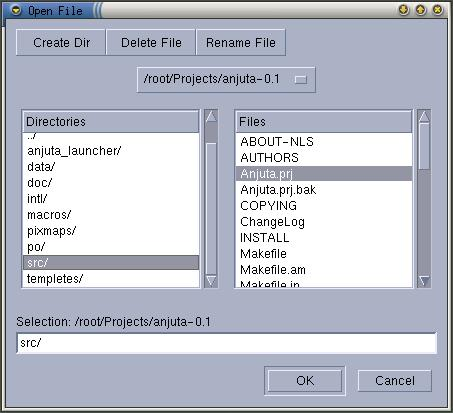

Anjuta Manual version 0.1Copyright (c) Kh. Naba Kumar Singh |
| Contents | Index | Shortcuts |
| PREV: Creating a new file | UP: File Operations | NEXT: Editing files |
To open an already existing file, activate the menu item File/Open or click the open button in the main tool-bar or press Ctrl+O. This will display the open file dialog box.
Select or enter the file you want to open then click OK.

If you change your mind, then click Cancel to dismiss the dialog box without opening the file.
Saving file:
To save a file, activate the menu item File/Save or click the save button in the main tool-bar or press Ctrl+S. This will save the file. If the file is a new file, a save as dialog box will appear. Enter the file name and click OK to save the new file with the file name supplied.
Saving file as different file:
You can explicitly save a file with a new file name. To do this, activate File/Save as. A dialog box for save as will appear prompting you to enter the new file name. Enter the name and click OK.
Note that when you Save As, the original file is not deleted. It is just left untouched from the last save. More over, if the new file name you have just entered is already existing, it will display a confirmation dialog box to overwrite it. Clicking Yes in this confirmation will overwrite the file with the file you are saving.
Closing file:
To close a file, activate File/Close or click close button in the main tool-bar. This will close the current file. If the file is not saved or is a new file, then anjuta will prompt you to save the file before closing it.
Things to Note:
One more thing you must keep in mind is that, if you have enabled
auto-save, it will not auto-save any new file(s). You must first save it/them
manually. Only then will the auto-save work for them too. Same is applied for
the save all. Save all will not save the new file(s), if you haven't saved
it/them first manually.
i.e. You must save a file manually before Auto-Save or Save-All will
work with it.